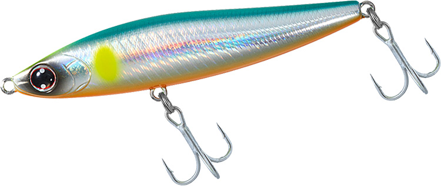
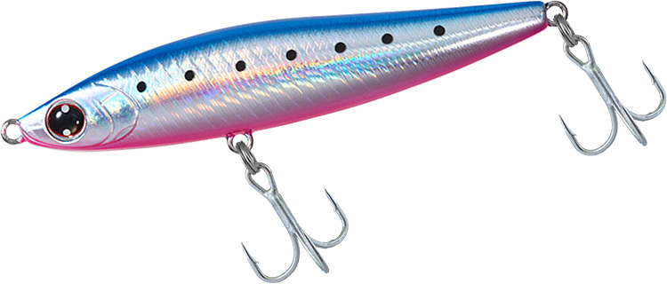
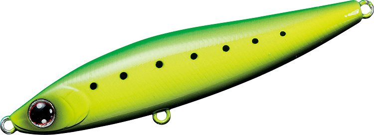
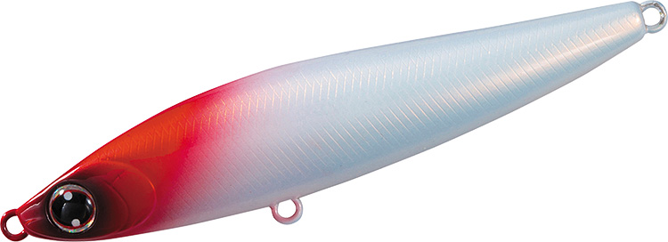

モアザン スイッチヒッター85S
（MORETHAN SWITCH HITTER 85S）
モアザン スイッチヒッター85SはDAIWA（ダイワ）のシンキングペンシルです。
小沼正弥氏監修。河川・サーフ・磯・干潟などのシャローや水面直下を簡単に攻略できる、デイ＆ナイト対応のシンペンです。ジグ並みに飛ぶので、ミノーでは届かない遠くのボイルも狙え、「ピンチな時にもスイッチヒッター」と言われる1本です。

画像出典:DAIWA公式HP
スペック
- メーカー
- DAIWA（ダイワ）
- タイプ
- シンキングペンシル（シンキング）
- 全長
- 85mm
- 自重
- 20g
- 有効レンジ
- 約0.2〜1.0m
- フック
- #6トレブル
- リング
- #3
- アクション
- 不規則スラローム
- 飛距離
- MAX 72.5m／Ave 70.6m
- ターゲット
- シーバス
- 価格
- 1,900円（税抜）
▼今すぐチェック

スイッチヒッター85Sの特徴
ジグ並みの飛距離と、流れに敏感な不規則スラローム
-
流れに敏感な不規則スラローム
ローリング＋波長の大きいテールスライドに、流れの変化で起きるスライドやフラつきが加わり、ハイプレッシャー下でも「食わせの間」を自動で作ります。
-
ミノーでは届かない距離へ
85mm・20gでMAX72.5m（メーカーテスト）。遠くのボイルや沖の潮目まで届きます。
-
シャローにも縦の攻略にも
浮き上がりが早くシャローを攻略しやすい一方、水平姿勢でユラユラ揺れながらフォールするので縦の攻略にも使えます。
-
さまざまなベイトパターンに対応
コノシロ・落ち鮎・イワシ・イナッコ・ハタハタなど、さまざまなベイトのパターンに対応します。
スイッチヒッター85Sの使い方
基本は昼夜を問わず、スローリトリーブのただ巻きだけ。
プレッシャーの高いフィールドでは、ダウンクロスではなくアップストリームにキャストし、流されてくる小魚がシーバスの斜め前に現れるようなイメージで通すのがコツです。
スイッチヒッター85Sの得意な状況
サーフ・磯・漁港・湾奥・都市型河川・河口・干潟と、使える場所を選びません。ミノーでは届かない沖のボイル打ちや、ほかのルアーで反応がない「ピンチな時」に投げたい1本です。
ワンポイント
もっとシャローをゆっくり引きたいときは、85Sのシャロー対応スローシンキングモデル「85S-LV」もあります。干潟やリバーゲームなど浅い場所では、85S-LVとの使い分けも試してみてください。
スイッチヒッターシリーズの使い分け
| モデル | 全長／自重 | 得意な場面 |
|---|---|---|
| スイッチヒッター65S | 65mm／13.4g | 約0.2〜0.8m。不規則スラローム。バチ抜けや爆風時の遠投に |
| スイッチヒッター85S | 85mm／20g | 約0.2〜1.0m。不規則スラローム。シャロー〜中層を遠投で探る基準サイズ（本記事のモデル） |
| スイッチヒッター105S | 105mm／21.2g | 約0.2〜0.8m。スローシンキングのワイドS字スラローム |
65Sと85Sは同じ「不規則スラローム」でサイズ違い、105SはS字スラロームのスローシンキングで性格が少し違います。ベイトの大きさと、届かせたい距離・レンジで選び分けましょう。ほかに浮き上がりを早くした85S-LV、120S+R、フローティングの105F・120F+Rもあります。
人気カラー
公式ラインナップから4色を紹介します（ライムイワシとパールレッドヘッドの画像はシリーズ共通の画像です）。

アデルエメラルド鮎アデル仕様のフラッシングで見せる鮎カラー。落ち鮎のシーズンの河川に。

アデルブルピンイワシブルーピンクのイワシ系。イワシが回遊するサーフや港湾に。

ライムイワシライムの背中で目立たせるイワシ系。濁りやマズメに。

パールレッドヘッドパールボディのレッドヘッド。ナイトゲームでシルエットを出したいときに。
画像出典:DAIWA公式HP
スイッチヒッター85Sに似ているルアー
-
 モアザン スイッチヒッター105S
DAIWA
詳細はこちら＞
モアザン スイッチヒッター105S
DAIWA
詳細はこちら＞
同じスイッチヒッターの105mm。スローシンキングのワイドなS字スラロームで見せたいときに。
-
 ムロッソ85S
OSP
詳細はこちら＞
ムロッソ85S
OSP
詳細はこちら＞
全長85mm・自重20.4gのシンキングペンシル。同じ85mm・20gクラスの重めのシンペンとして比べたい1本。
-
 弾丸ソバット80
ima
詳細はこちら＞
弾丸ソバット80
ima
詳細はこちら＞
全長80mm・自重20gのシンキングペンシル。同じ20gクラスで、深いレンジをタイトスラロームで引きたいときに。